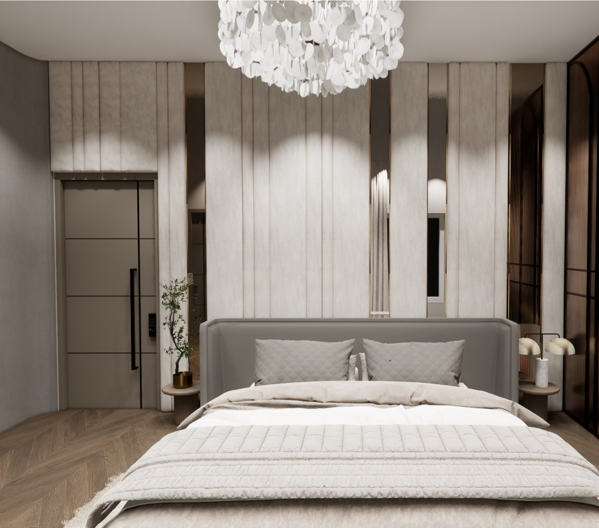
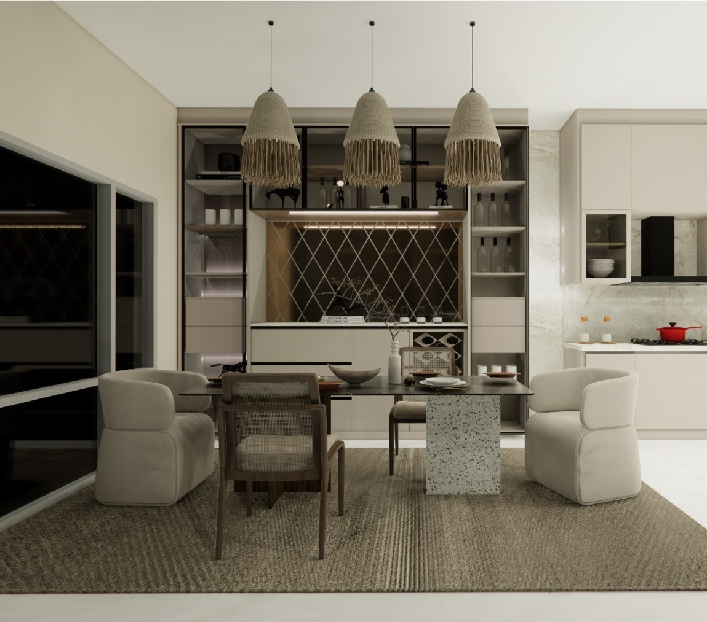
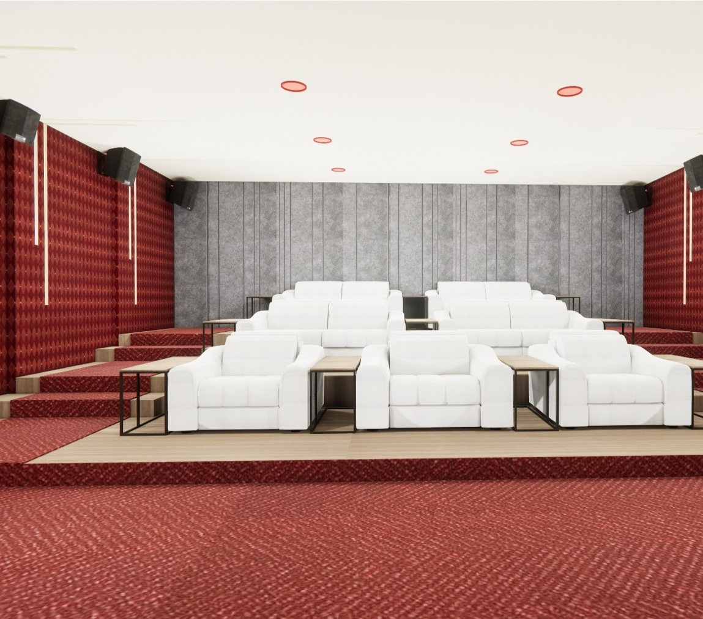
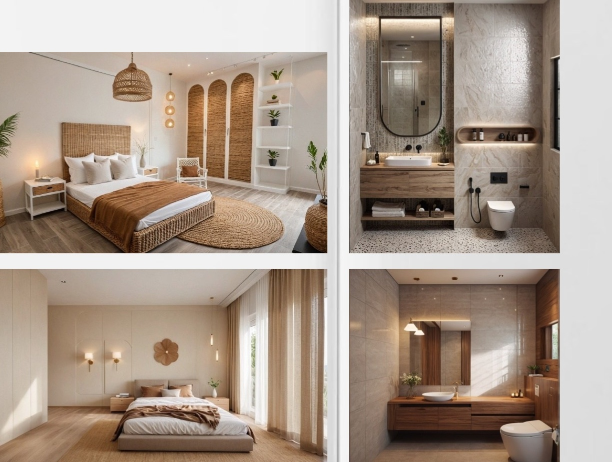
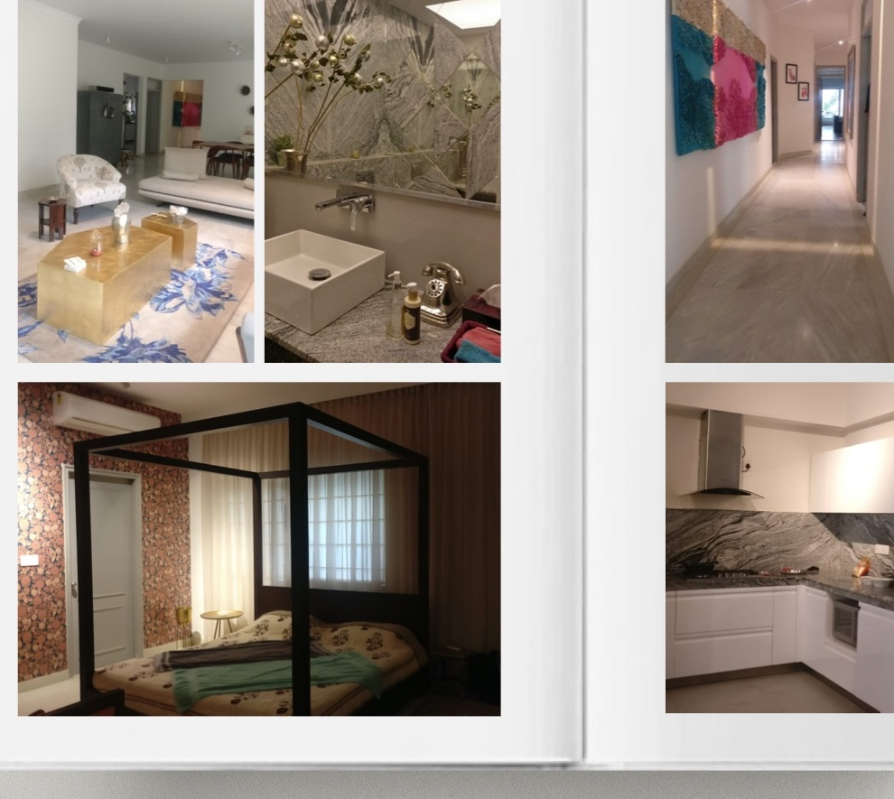

Interior Design + Architecture
Quiet luxury, strong planning, and spaces that feel deeply resolved.
I am Namrata Mahapatra, an interior designer and architect with 10 years of experience creating homes, hospitality spaces, and bespoke interiors that feel elegant, lived-in, and deeply considered. Through Twinkles Studio, I work closely with clients from concept to completion, shaping spaces through planning, material direction, visual clarity, and a calm, collaborative design process.
Based in Bangalore
Residential, commercial, and hospitality
Concept to completion



Profile
A design practice built on sensitivity, structure, and client trust.
My work is grounded in concept development, mood boards, material selection, visual storytelling, client communication, and project management from concept to completion. I believe the best interiors are not only beautiful, but also clear in their intent, practical in their planning, and aligned with the life that unfolds inside them.
My projects range from calm, minimal residences and luxury villas to hospitality concepts and architectural studies. Every project begins with understanding the client well, then translating that understanding into a space that feels cohesive, personal, and enduring.
Education
Bachelor of Architecture, Manipal School of Architecture and Planning
Tools
AutoCAD, V-Ray, Photoshop, Enscape
Focus Areas
Residential interiors, hospitality spaces, bespoke homes, architectural concepts
Design Approach
The strength of the studio is not one fixed style, but a thoughtful response to each client.
Some homes call for softness and restraint. Others need richer textures, stronger gestures, or more expressive detailing. My approach is to understand the emotional tone of a project first, then shape the space so it feels natural, refined, and complete.
- Thoughtful spatial planning rooted in use and circulation
- Material-led storytelling with warm, elevated palettes
- Clear design presentations that help clients decide with confidence
- Execution awareness shaped by prior sales and leadership roles
Selected Spaces
A selection of projects that reflect the studio’s range, detail, and point of view.

Residential
Brunton Miraya House
A soft, minimal, and serene home designed for a couple who value simplicity, comfort, and ease. Inspired by Japandi aesthetics, the project balances calm functionality with subtle detailing and a strong sense of mental clarity.

Early Signature Home
Bothireddy’s Residence
A home created for an architect client, shaped from scratch through custom furniture, carefully selected materials, and a bold yet refined visual identity. The result feels layered, personal, and confidently composed.
Bespoke Interior Direction
Raj Ville Residence
A detailed residential concept developed room by room, from the entrance and staircase to the kitchen, courtyard, bedrooms, bathrooms, balconies, home theater, terrace, and utility areas. It reflects the studio’s ability to think through an entire home as one coherent experience.
How I Work
Clarity in presentation is part of creating a confident client experience.
I believe clients should be able to see and feel the direction of their project clearly before execution begins. That is why each concept is developed with care, communicated visually, and shaped into a polished presentation that makes decision-making easier and more intuitive.
Experience
A career shaped by design, sales, studio leadership, and execution.
KOD Architects
Assisted on office, retail, and school projects while handling presentations and coordination.
JAPCON Architects
Worked across interiors, commercial, institutional, and hospitality projects with client and vendor coordination.
Livspace
Progressed from Sales Designer to Design Manager to Associate General Manager while driving design conversions and team performance.
Sobha Pvt Ltd
Handled B2B growth and partnerships in the A&D division across Bangalore.
Independent + JAPCON Collaborations
Worked on villas, farmhouses, offices, elevations, and high-value bespoke homes including notable luxury residences.
Start A Conversation
For clients who want a space that feels resolved, polished, and unmistakably theirs.
Reach out with your location, project type, and timeline to begin a consultation. Whether you are building a new home, reworking an existing space, or developing a hospitality concept, I would love to understand what you are imagining and how I can help bring it to life.
mahapatra.namrata@gmail.com
+91 90351 04889
Bangalore-based studio available for residential, commercial, and hospitality inquiries.